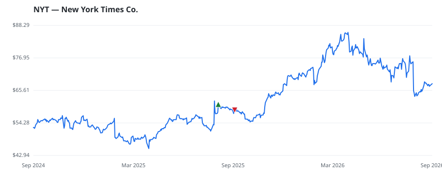

bullish · bearish · n/a — dots: price>SMA10 · SMA10>SMA50 · SMA50>SMA200 · up>down volume (20d)
Media & Entertainment · large cap
Members who bought NYT earned a dollar-weighted -2.8% from their disclosure dates, versus +1.9% for the S&P 500 over the same holding windows (-4.7% alpha).

▲ green = a disclosed purchase · ▼ red = a disclosed sale (plotted on disclosure date)
New York Times Co is an American media company known for publishing its flagship newspaper, The New York Times. The company also operates the International New York Times newspaper, as well as digital properties such as NYTimes and various smartphone applications. The company derives revenue from subscriptions, advertising, and other sources, where the majority of its revenue is generated through subscriptions, which consist of income from standalone and multiproduct bundle subscriptions to its digital products and subscriptions to and single-copy and bulk sales of print products. NEWSPAPERS: PUBLISHING OR PUBLISHING & PRINTING · website
| Revenue | $2.8B | Net income | $344.0M |
|---|---|---|---|
| Operating income | $431.6M | Diluted EPS | $2.09 |
| Assets | $3.0B | Equity | $2.0B |
| Member | Chamber | Out-performer | Disclosed buys $ | Return on buys |
|---|---|---|---|---|
| Lisa McClain | house | — | $8K | -2.8% |
Disclosed $ figures are bracket midpoints — filings report ranges (e.g. $1,001–$15,000), not exact amounts.
| Fund | Fund alpha vs SPY | Position | % of book |
|---|---|---|---|
| ABRAMS BISON INVESTMENTS, LLC | +35% | $93M | 4.5% |
| GUERRA PAN ADVISORS, LLC | +5% | $0M | 0.2% |
| Kaufman Rossin Wealth, LLC | +12% | $0M | 0.1% |
Hedge data: SEC EDGAR 13F · ranked funds beat SPY in >50% of their quarters · fund alpha = mirror-portfolio return minus SPY.